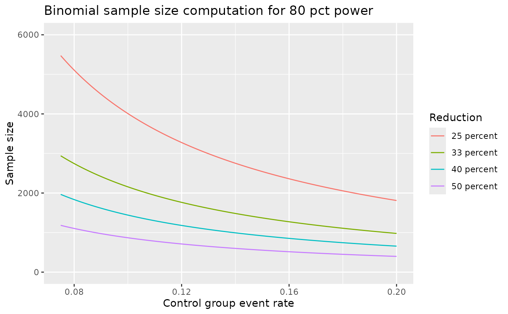

varBinomial.RdSupport is provided for sample size estimation, power, testing, confidence intervals and simulation for fixed sample size trials (that is, not group sequential or adaptive) with two arms and binary outcomes. Both superiority and non-inferiority trials are considered. While all routines default to comparisons of risk-difference, options to base computations on risk-ratio and odds-ratio are also included.
nBinomial() computes sample size or power using the method of
Farrington and Manning (1990) for a trial to test the difference between two
binomial event rates. The routine can be used for a test of superiority or
non-inferiority. For a design that tests for superiority nBinomial()
is consistent with the method of Fleiss, Tytun, and Ury (but without the
continuity correction) to test for differences between event rates. This
routine is consistent with the Hmisc package routines bsamsize and
bpower for superiority designs. Vector arguments allow computing
sample sizes for multiple scenarios for comparative purposes.
testBinomial() computes a Z- or Chi-square-statistic that compares
two binomial event rates using the method of Miettinen and Nurminen (1980).
This can be used for superiority or non-inferiority testing. Vector
arguments allow easy incorporation into simulation routines for fixed, group
sequential and adaptive designs.
ciBinomial() computes confidence intervals for 1) the difference
between two rates, 2) the risk-ratio for two rates or 3) the odds-ratio for
two rates. This procedure provides inference that is consistent with
testBinomial() in that the confidence intervals are produced by
inverting the testing procedures in testBinomial(). The Type I error
alpha input to ciBinomial is always interpreted as 2-sided.
simBinomial() performs simulations to estimate the power for a
Miettinen and Nurminen (1985) test comparing two binomial rates for
superiority or non-inferiority. As noted in documentation for
bpower.sim() in the HMisc package, by using testBinomial() you
can see that the formulas without any continuity correction are quite
accurate. In fact, Type I error for a continuity-corrected test is
significantly lower (Gordon and Watson, 1996) than the nominal rate. Thus,
as a default no continuity corrections are performed.
varBinomial computes blinded estimates of the variance of the
estimate of 1) event rate differences, 2) logarithm of the risk ratio, or 3)
logarithm of the odds ratio. This is intended for blinded sample size
re-estimation for comparative trials with a binary outcome.
Testing is 2-sided when a Chi-square statistic is used and 1-sided when a Z-statistic is used. Thus, these 2 options will produce substantially different results, in general. For non-inferiority, 1-sided testing is appropriate.
You may wish to round sample sizes up using ceiling().
Farrington and Manning (1990) begin with event rates p1 and p2
under the alternative hypothesis and a difference between these rates under
the null hypothesis, delta0. From these values, actual rates under
the null hypothesis are computed, which are labeled p10 and
p20 when outtype=3. The rates p1 and p2 are used
to compute a variance for a Z-test comparing rates under the alternative
hypothesis, while p10 and p20 are used under the null
hypothesis. This computational method is also used to estimate variances in
varBinomial() based on the overall event rate observed and the input
treatment difference specified in delta0.
Sample size with scale="Difference" produces an error if
p1-p2=delta0. Normally, the alternative hypothesis under
consideration would be p1-p2-delta0$>0$. However, the alternative can
have p1-p2-delta0$<0$.
ciBinomial(x1, x2, n1, n2, alpha = 0.05, adj = 0, scale = "Difference") nBinomial( p1, p2, alpha = 0.025, beta = 0.1, delta0 = 0, ratio = 1, sided = 1, outtype = 1, scale = "Difference", n = NULL ) simBinomial( p1, p2, n1, n2, delta0 = 0, nsim = 10000, chisq = 0, adj = 0, scale = "Difference" ) testBinomial( x1, x2, n1, n2, delta0 = 0, chisq = 0, adj = 0, scale = "Difference", tol = 1e-11 ) varBinomial(x, n, delta0 = 0, ratio = 1, scale = "Difference")
| x1 | Number of “successes” in the control group |
|---|---|
| x2 | Number of “successes” in the experimental group |
| n1 | Number of observations in the control group |
| n2 | Number of observations in the experimental group |
| alpha | type I error; see |
| adj | With |
| scale | “Difference”, “RR”, “OR”; see the
|
| p1 | event rate in group 1 under the alternative hypothesis |
| p2 | event rate in group 2 under the alternative hypothesis |
| beta | type II error |
| delta0 | A value of 0 (the default) always represents no difference
between treatment groups under the null hypothesis. |
| ratio | sample size ratio for group 2 divided by group 1 |
| sided | 2 for 2-sided test, 1 for 1-sided test |
| outtype |
|
| n | If power is to be computed in |
| nsim | The number of simulations to be performed in
|
| chisq | An indicator of whether or not a chi-square (as opposed to Z)
statistic is to be computed. If |
| tol | Default should probably be used; this is used to deal with a rounding issue in interim calculations |
| x | Number of “successes” in the combined control and experimental groups. |
testBinomial() and simBinomial() each return a vector
of either Chi-square or Z test statistics. These may be compared to an
appropriate cutoff point (e.g., qnorm(.975) for normal or
qchisq(.95,1) for chi-square).
ciBinomial() returns a data frame with 1 row with a confidence
interval; variable names are lower and upper.
varBinomial() returns a vector of (blinded) variance estimates of the
difference of event rates (scale="Difference"), logarithm of the
odds-ratio (scale="OR") or logarithm of the risk-ratio
(scale="RR").
With the default outtype=1, nBinomial() returns a vector of
total sample sizes is returned. With outtype=2, nBinomial()
returns a data frame containing two vectors n1 and n2
containing sample sizes for groups 1 and 2, respectively; if n is
input, this option also returns the power in a third vector, Power.
With outtype=3, nBinomial() returns a data frame with the
following columns:
A vector with total samples size required for each event rate comparison specified
A vector of sample sizes for group 1 for each event rate comparison specified
A vector of sample sizes for group 2 for each event rate comparison specified
As input
As input
As input; if
n is input, this is computed
If n=NULL on input,
this is 1-beta; otherwise, the power is computed for each sample size
input
A vector containing the standard deviation of the
treatment effect difference under the null hypothesis times sqrt(n)
when scale="Difference" or scale="OR"; when scale="RR",
this is the standard deviation time sqrt(n) for the numerator of the
Farrington-Manning test statistic x1-exp(delta0)*x2.
A
vector containing the values as sigma0, in this case estimated under
the alternative hypothesis.
As input
As input
group 1 event rate used for null hypothesis
group 2 event rate used for null hypothesis
Farrington, CP and Manning, G (1990), Test statistics and sample size formulae for comparative binomial trials with null hypothesis of non-zero risk difference or non-unity relative risk. Statistics in Medicine; 9: 1447-1454.
Fleiss, JL, Tytun, A and Ury (1980), A simple approximation for calculating sample sizes for comparing independent proportions. Biometrics;36:343-346.
Gordon, I and Watson R (1985), The myth of continuity-corrected sample size formulae. Biometrics; 52: 71-76.
Miettinen, O and Nurminen, M (1985), Comparative analysis of two rates. Statistics in Medicine; 4 : 213-226.
# Compute z-test test statistic comparing 39/500 to 13/500 # use continuity correction in variance x <- testBinomial(x1 = 39, x2 = 13, n1 = 500, n2 = 500, adj = 1) x#> [1] 3.701266#> [1] 0.0001072634# Compute with unadjusted variance x0 <- testBinomial(x1 = 39, x2 = 23, n1 = 500, n2 = 500) x0#> [1] 2.098083#> [1] 0.0179489# Perform 50k simulations to test validity of the above # asymptotic p-values # (you may want to perform more to reduce standard error of estimate) sum(as.double(x0) <= simBinomial(p1 = .078, p2 = .078, n1 = 500, n2 = 500, nsim = 10000)) / 10000#> [1] 0.0176#> [1] 0.0177# Perform a non-inferiority test to see if p2=400 / 500 is within 5% of # p1=410 / 500 use a z-statistic with unadjusted variance x <- testBinomial(x1 = 410, x2 = 400, n1 = 500, n2 = 500, delta0 = -.05) x#> [1] 2.807617#> [1] 0.002495478# since chi-square tests equivalence (a 2-sided test) rather than # non-inferiority (a 1-sided test), # the result is quite different pchisq(testBinomial( x1 = 410, x2 = 400, n1 = 500, n2 = 500, delta0 = -.05, chisq = 1, adj = 1 ), 1, lower.tail = FALSE)#> [1] 0.005012758# now simulate the z-statistic witthout continuity corrected variance sum(qnorm(.975) <= simBinomial(p1 = .8, p2 = .8, n1 = 500, n2 = 500, nsim = 100000)) / 100000#> [1] 0.02496# compute a sample size to show non-inferiority # with 5% margin, 90% power nBinomial(p1 = .2, p2 = .2, delta0 = .05, alpha = .025, sided = 1, beta = .1)#> [1] 2697.607# assuming a slight advantage in the experimental group lowers # sample size requirement nBinomial(p1 = .2, p2 = .19, delta0 = .05, alpha = .025, sided = 1, beta = .1)#> [1] 4131.9# compute a sample size for comparing 15% vs 10% event rates # with 1 to 2 randomization nBinomial(p1 = .15, p2 = .1, beta = .2, ratio = 2, alpha = .05)#> [1] 1191.041# now look at total sample size using 1-1 randomization n <- nBinomial(p1 = .15, p2 = .1, beta = .2, alpha = .05) n#> [1] 1079.853# check if inputing sample size returns the desired power nBinomial(p1 = .15, p2 = .1, beta = .2, alpha = .05, n = n)#> [1] 0.8# re-do with alternate output types nBinomial(p1 = .15, p2 = .1, beta = .2, alpha = .05, outtype = 2)#> n1 n2 #> 1 539.9264 539.9264nBinomial(p1 = .15, p2 = .1, beta = .2, alpha = .05, outtype = 3)#> n n1 n2 alpha sided beta Power sigma0 sigma1 p1 #> 1 1079.853 539.9264 539.9264 0.05 1 0.2 0.8 0.6614378 0.6595453 0.15 #> p2 delta0 p10 p20 #> 1 0.1 0 0.125 0.125# look at power plot under different control event rate and # relative risk reductions library(dplyr)#> #>#> #> #>#> #> #>library(ggplot2) p1 <- seq(.075, .2, .000625) len <- length(p1) p2 <- c(p1 * .75, p1 * 2/3, p1 * .6, p1 * .5) Reduction <- c(rep("25 percent", len), rep("33 percent", len), rep("40 percent", len), rep("50 percent", len)) df <- tibble(p1 = rep(p1, 4), p2, Reduction) %>% mutate(`Sample size` = nBinomial(p1, p2, beta = .2, alpha = .025, sided = 1)) ggplot(df, aes(x = p1, y = `Sample size`, col = Reduction)) + geom_line() + xlab("Control group event rate") + ylim(0,6000) + ggtitle("Binomial sample size computation for 80 pct power")# compute blinded estimate of treatment effect difference x1 <- rbinom(n = 1, size = 100, p = .2) x2 <- rbinom(n = 1, size = 200, p = .1) # blinded estimate of risk difference variance varBinomial(x = x1 + x2, n = 300, ratio = 2, delta0 = 0)#> [1] 0.001659333# blinded estimate of log-risk-ratio variance varBinomial(x = x1 + x2, n = 300, ratio = 2, delta0 = 0, scale = "RR")#> [1] 0.1034211# blinded estimate of log-odds-ratio variance varBinomial(x = x1 + x2, n = 300, ratio = 2, delta0 = 0, scale = "OR")#> [1] 0.1355966